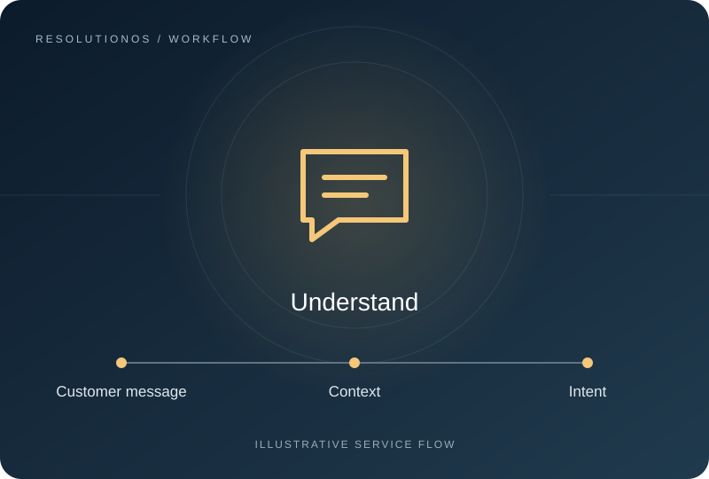
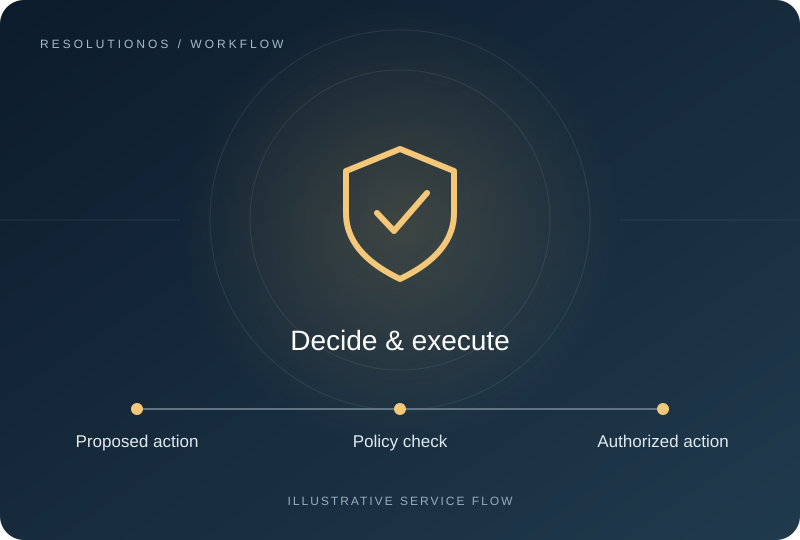
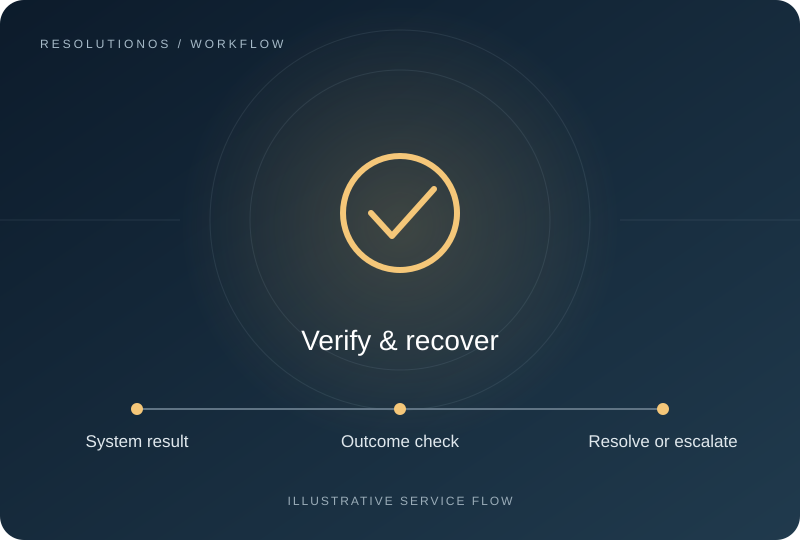
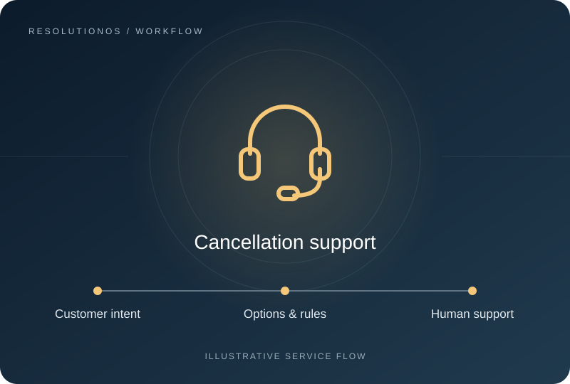

More Than a Chatbot
Traditional chatbots mainly understand and respond. ResolutionOS is designed around Understand → Decide → Execute → Verify → Recover / Escalate. The aim is to move a customer from a problem to a completed service.

Traditional chatbots mainly understand and respond. ResolutionOS is designed around Understand → Decide → Execute → Verify → Recover / Escalate. The aim is to move a customer from a problem to a completed service.

The AI proposes what should happen. A separate policy and code layer controls permissions, business rules, financial limits, approvals and duplicate-action prevention. Compensation must stay within the limits your business defines.

Telling a customer that an action happened is not enough. ResolutionOS is designed to check the actual result, retain an action log and follow up. Failures and uncertainty should lead to recovery or human escalation.
ResolutionOS is designed to welcome customers through WhatsApp and websites, establish identity, interpret intent and bring together conversation history, customer information and relevant knowledge. It interprets emotional signals from conversational context, including frustration, confusion and urgency, to adjust tone and response length.
The AI language layer interprets the conversation and proposes a next step. A separate policy and code layer checks permissions, business rules, financial limits, approval requirements and duplicate-action prevention before any authorized action is executed.
An answer is not a verified result. ResolutionOS is designed to check the business-system response, log the action and follow up on the outcome. If execution fails, the result is uncertain or the case needs judgment, it should recover safely or hand off to a human with the relevant context.

Designed to connect with CRM, e-commerce, order management, subscription, payment and logistics systems, plus internal business APIs. These are integration targets; availability depends on adapters and implementation.
Some cases can be automated, some require approval and some should go directly to a human. Handoff should include the request, history, attempted actions and unresolved questions, so customers do not have to start over.
A shared engine is intended to support industry-specific knowledge, policies, workflows and rules through Vertical Packs. Initial focus: e-commerce and subscriptions. Future industry coverage is a direction, not a claim of live deployment.
Identity & Intent
Context & Knowledge
Policy & Action
Verification & Handoff
Audit & Follow-up